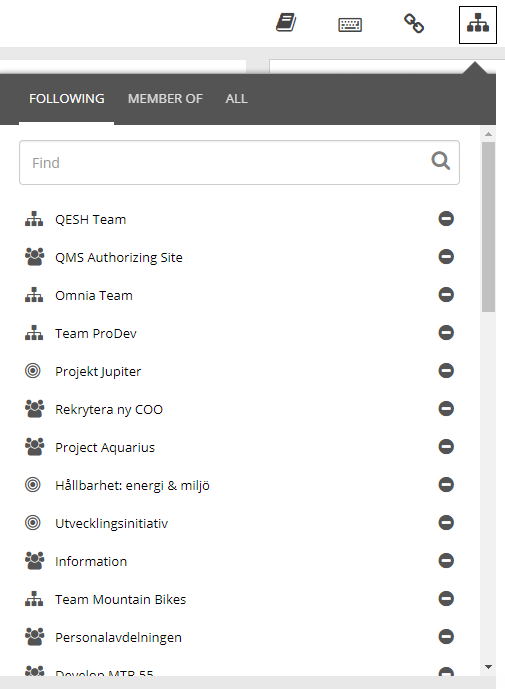
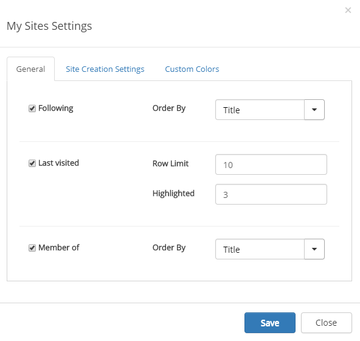
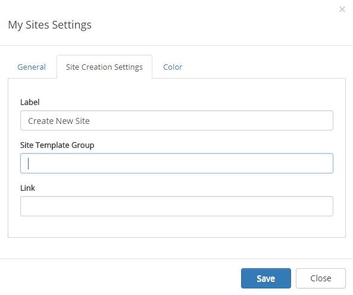
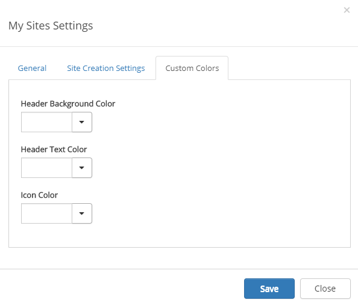
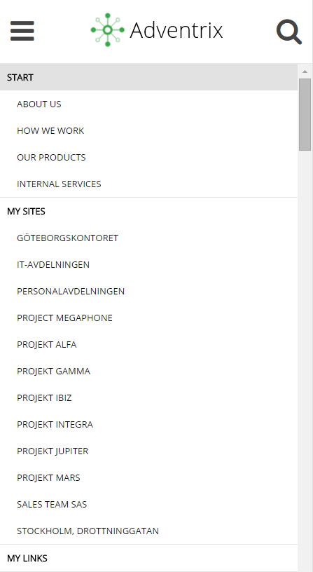
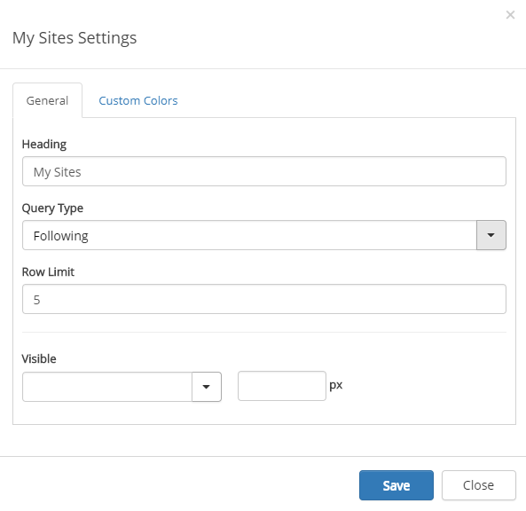

The My sites control makes it possible for the end user to navigate to all sites that the user has access to.

The My sites quick search makes it possible for the end user to find sites, that the user has access to, based on any of the following base templates:
Four tabs can be available in the control:
The user can follow a site by clicking the "Follow site" icon, the plus, in the search result or the Last visited or Member of lists.
The user can stop following a site by clicking the "Stop following site" icon, the minus, in any of the lists.
Two things will happen when a user follows a site:
Activate the Edit button and click the cogwheel for the control to edit the settings.

On the General tab you can select which tabs to display (All is always displayed) and set the following:
On this tab you can set the following:

Here you can set the link Label for creating news sites.
You should primarily set colors through Theme colors in Omnia Admin (System/Settings/Default colors). If you still would like custom colors for the control, you can set colors for header and icons.

The my sites control will not be shown when the screen is below a certain width. When the my sites control is hidden, the mobile navigation will be shown. The mobile navigation includes the "Following" list from My sites, but the user cannot stop follow sites from the list.

My sites can also be added to any legacy page as a web part and as a block to a Quick Page. The web part/block can be set to display either the "Following" list or the "Latest visited" list from My sites, but the user cannot stop follow sites from the list.
